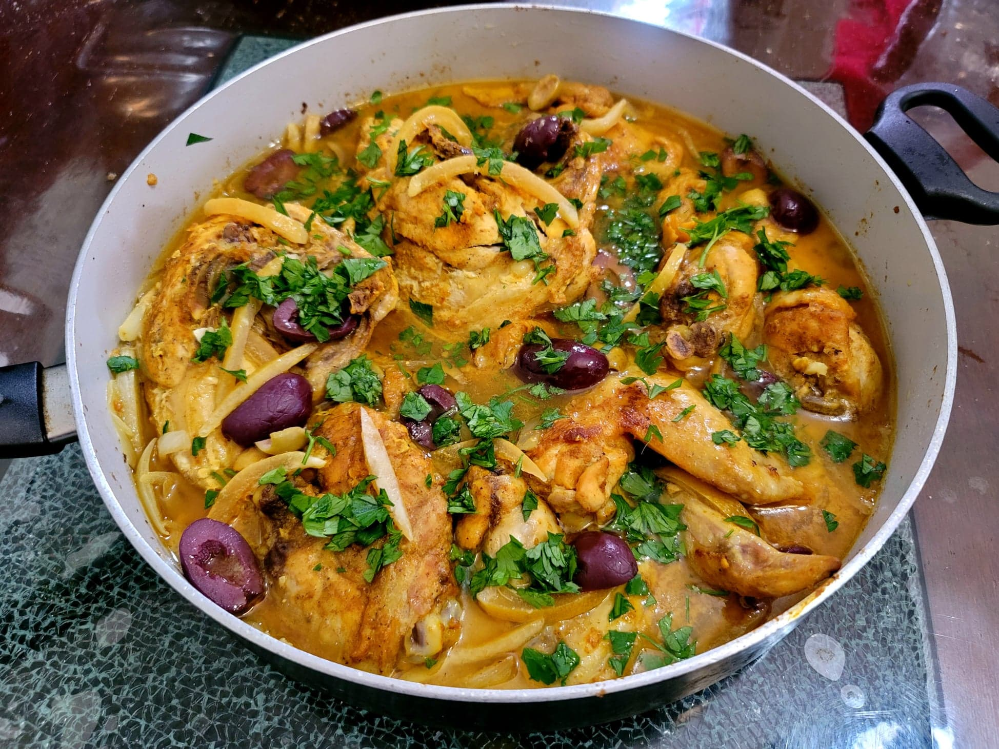

Chicken Tagine

Ingredients:
Marinade:
- 1 whole Chicken, cut into 8 pieces
- 5 cloves Garlic, minced
- 1 tsp Paprika
- 1/2 tsp Ground ginger
- 1/2 tsp Cumin
- 1/2 tsp Turmeric
- 1/2 tsp Salt
- 1/4 tsp Ground black pepper
- 1/4 tsp Saffron, ground
Chicken Tagine:
- 2 tbsp Olive oil
- 3 Onions, sliced
- 1 Cinnamon stick
- 8 Kalamata olives, pitted, halved
- 8 Green olives, pitted, halved
- 1 large or 3 small Preserved lemons, peel only, thinly sliced
- 1 cup Chicken stock
- 1/2 Lemon, juiced
- 1/4 bunch Parsley, chopped
Instructions:
- Combine the marinade ingredients and massage into the chicken. Let marinate overnight.
- Heat the olive oil in a very large pan over medium heat. Add in the chicken and brown on all sides. Then remove from the pan and reserve the chicken.
- Add the onions to the pan. Sauté for about 15 minutes or until starting to brown.
- Add in the cinnamon stick and then top with the chicken. Scatter the olives and preserved lemonsover the chicken. Then pour the chicken stock and lemon juice over the chicken. Cover tightly and cook over low heat for about 30 minutes, or until the chicken is cooked through.
- Garnish with parsley and serve immediately over couscous.